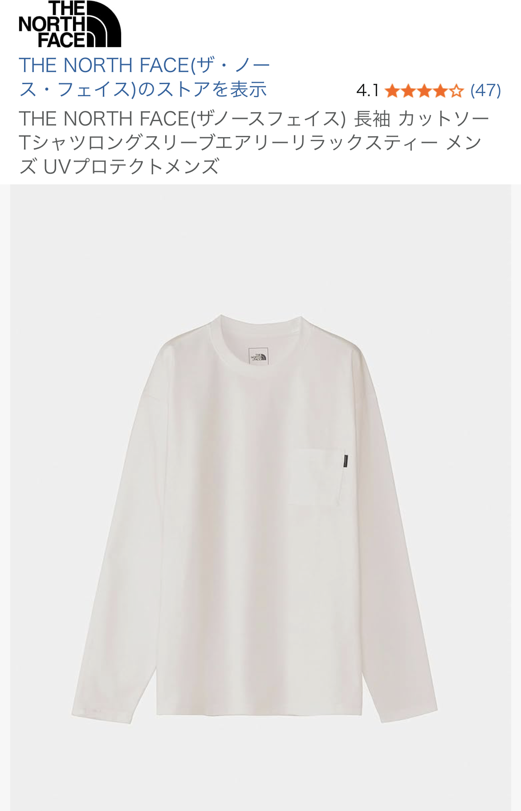

THE NORTH FACE の長袖Tシャツは「ロゴの主張が控えめで、素材が良い」という理由から、幅広い層に人気があります。今回参考にした口コミでは★4評価で、実際に着用した人のリアルな感想が多く、購入前の判断材料として非常に有益でした。
レビュー投稿者は身長165cm・体重56〜58kgと平均的な体型で、「ノースアピールをそこまでしないけど良いものを着たい人におすすめ」と評価。まさに“さりげなく質の良い服を着たい人向け”のアイテムで、普段着としても、ちょっとした外出にも使える万能さが魅力です。
まず特筆すべきは、肌触りの良さ。THE NORTH FACE のTシャツは生地の質が安定しており、チープさが一切ありません。縫製も丁寧で、首元のヨレが出にくい点も高評価ポイント。長く着られるベーシックウェアとして優秀です。
口コミでも指摘されていた通り、白色はやや薄手で透け感があります。これは多くの白Tに共通する弱点ですが、特にライトカラーの肌着を合わせると自然に着こなせます。逆に黒や濃色のインナーは透けて見えるため避けた方が無難です。
THE NORTH FACE といえば大きなロゴが目立つアイテムも多いですが、このTシャツはロゴが控えめで、街着としてもオフィスカジュアルとしても使いやすいのが魅力。ブランド感を主張しすぎないため、どんなコーデにも馴染みます。
口コミ投稿者と同じ165cm前後の体型なら、標準サイズでジャストに着られる可能性が高いです。オーバーサイズで着たい場合はワンサイズ上げると、より今っぽいシルエットになります。
THE NORTH FACE のシンプル長袖Tシャツは、派手さはないものの「素材の良さ」「着心地」「汎用性」の3点が非常に優秀。口コミ評価が高いのも納得の仕上がりで、1枚持っておくと季節を問わず活躍します。白は薄手なのでインナー必須ですが、それを差し引いても満足度の高いアイテムです。